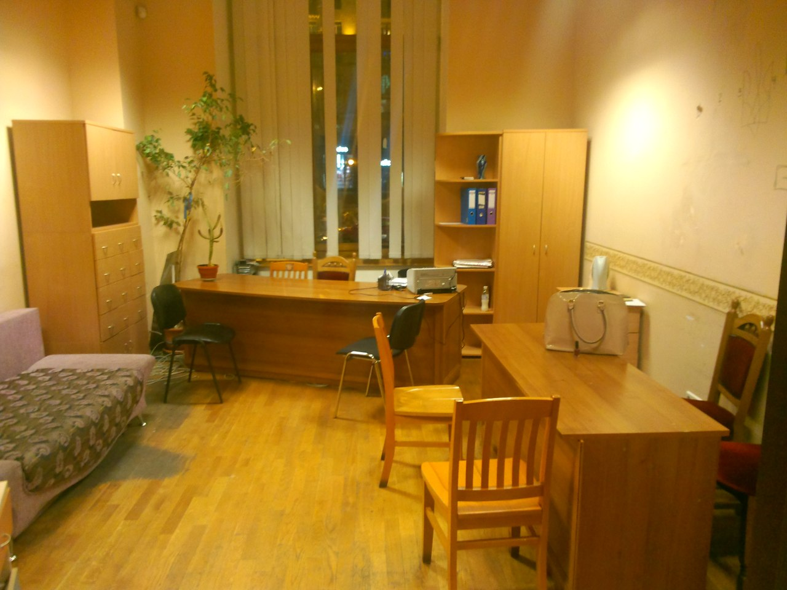
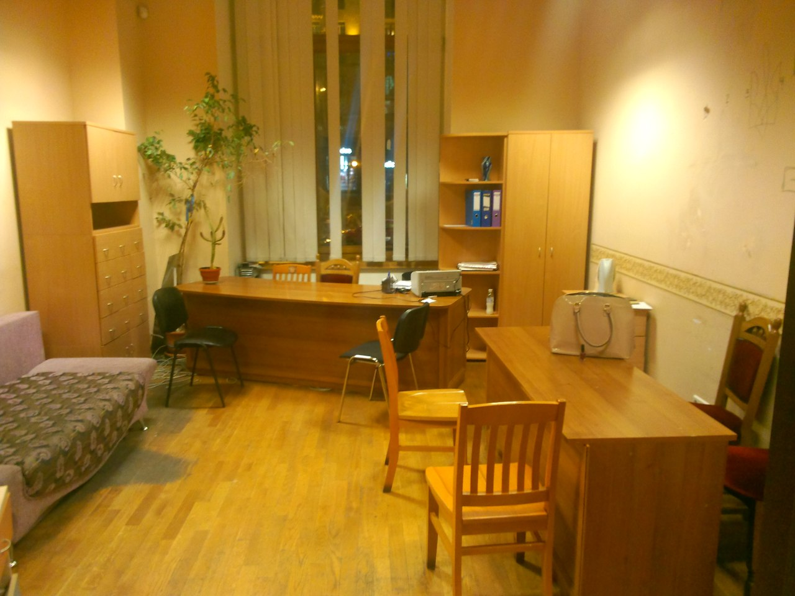

Новини
Надана допомога
З 25.02 по 29.03 ми надали безкоштовну первинну і вторинну юридичну допомогу 1035- ти (одна тисяча тридцяти п'яти) учасникам Євромайдану. це лише в рамках особистого прийому. ми - це я, Радислав Дутка, Катя Скічко, Катя Блоха, Вова Волянський, Олена Пакіж, Олег Гелетканич - вели особистий прийом, та ще 57 осіб, які залучені до діяльності Центру юридичної допомоги дякую вам. Усе буде добре!
 
